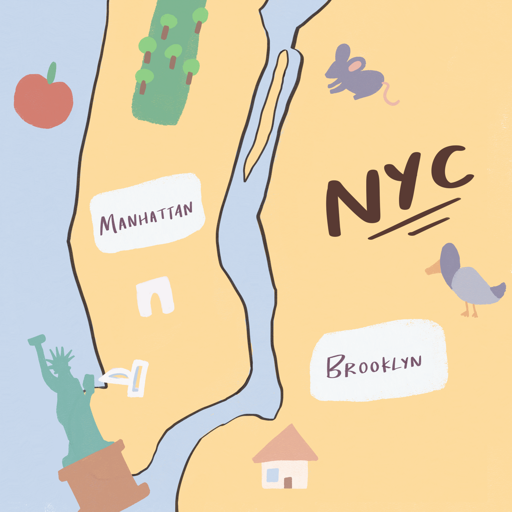

Interactive piece about time and nostalgia created using p5.js. Upon playing the sketch, the user sees animated waves coming up to shore and moving back rhythmically. These sounds and images remind me a lot of home and a happier time because my parents are originally from a tropical island. When the user presses “Enter”, footprints appear on the sand, but eventually, they get washed away by the big wave. This interactive component is supposed to represent how nothing lasts. I drew all the images (waves, footprints, beach items) so that the sketch feels more cohesive as a whole and to create a more raw feeling; you can see the individual brush strokes, as if care was put into each part of the sketch.

Go to Project
Interactive story piece about NYC and the places I grew up going to. During the beginning, users should be able to see a map of Manhattan and Brooklyn with clickable location pins. These pins will take users to pages with information about these locations and a background animation of specific parts of these locations drawn by me. The information about these places includes more general fun facts and my personal memories. There’s a back button users can click to return to the map and navigate to other locations as well. Users can toggle the text so they can read or simply appreciate the background animations.